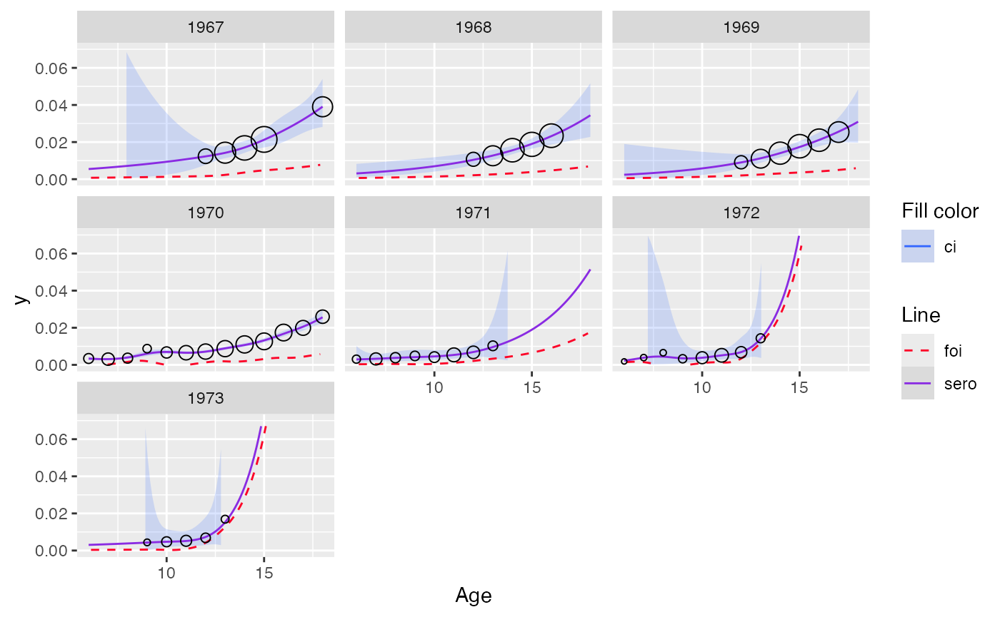
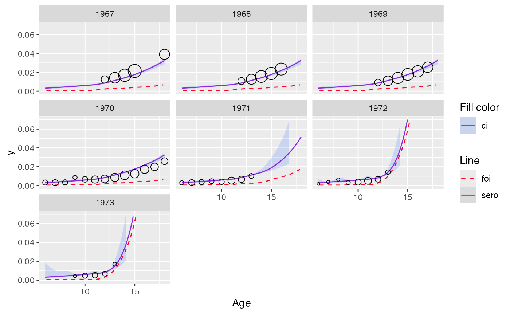
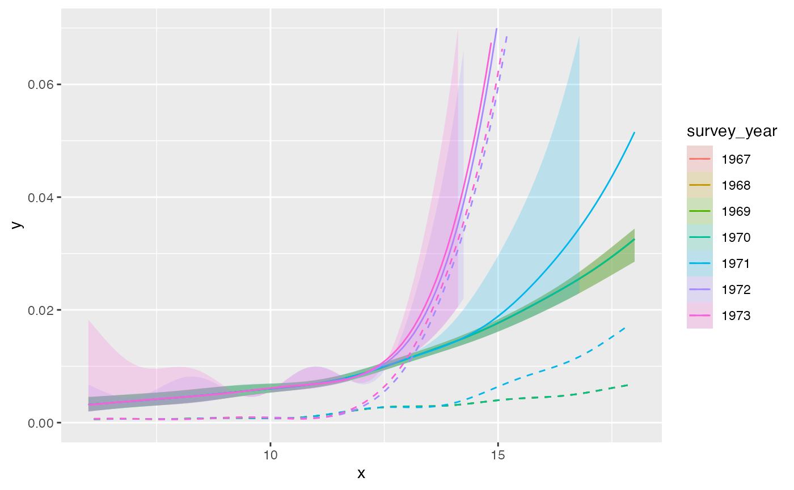
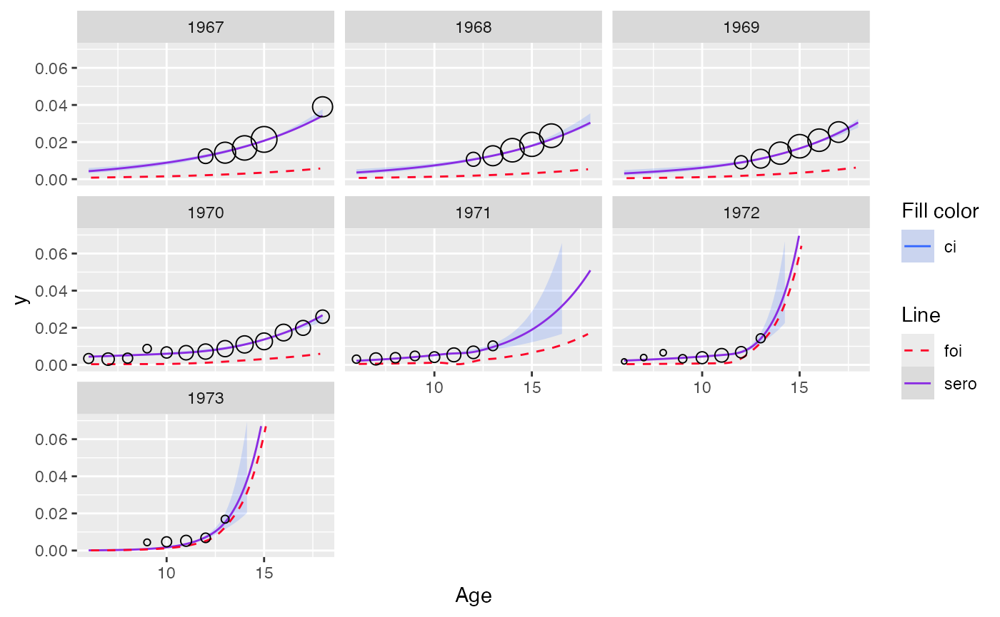

Model repeated cross-sectional data
Source:vignettes/repeated_cross_sectional.Rmd
repeated_cross_sectional.Rmd
library(serosv)
library(tidyverse)
#> Warning: package 'ggplot2' was built under R version 4.3.3
#> Warning: package 'tibble' was built under R version 4.3.3
#> Warning: package 'readr' was built under R version 4.3.1
#> Warning: package 'purrr' was built under R version 4.3.3
#> Warning: package 'dplyr' was built under R version 4.3.1
#> Warning: package 'stringr' was built under R version 4.3.1
#> ── Attaching core tidyverse packages ──────────────────────── tidyverse 2.0.0 ──
#> ✔ dplyr 1.1.4 ✔ readr 2.1.5
#> ✔ forcats 1.0.0 ✔ stringr 1.5.1
#> ✔ ggplot2 3.5.2 ✔ tibble 3.3.0
#> ✔ lubridate 1.9.3 ✔ tidyr 1.3.1
#> ✔ purrr 1.0.4
#> ── Conflicts ────────────────────────────────────────── tidyverse_conflicts() ──
#> ✖ dplyr::filter() masks stats::filter()
#> ✖ dplyr::lag() masks stats::lag()
#> ℹ Use the conflicted package (<http://conflicted.r-lib.org/>) to force all conflicts to become errorsAge-time varying model
To monitor changes in a population’s seroprevalence over time, modelers often conduct multiple cross-sectional surveys at different time points, each using a new representative sample. The resulting data are known as repeated cross-sectional data.
Proposed approach
To model repeated cross-sectional serological data,
serosv offers age_time_model() function which
implements the following workflow:
- Fit age-specific seroprevalence for each survey period
- Monotonize age-specific or birth-cohort-specific prevalence over time
- Fit monotonized age-specific seroprevalence for each survey period
Fitting data
The function expects input data with the following columns:
Either
ageandstatus(linelisting) orageandpos+tot(aggregated)A column for date of survey (specified via
time_colargument)A column for id of each survey period (specified via
grouping_colargument)
# Prepare data
tb_nl <- tb_nl_1966_1973 %>%
mutate(
survey_year = age + birthyr,
survey_time = ymd(paste0(survey_year, "0101"))
) %>% select(-birthyr) %>%
filter(survey_year > 1966) %>%
group_by(age, survey_year, survey_time) %>%
summarize(pos = sum(pos), tot = sum(tot), .groups = "drop")The monotonization method can be specified via the
monotonize_method argument, serosv currently
supports 2 options:
Pooled adjacent violators average (
monotonize_method = "pava")Shape constrained additive model (
monotonize_method = "scam")
The users can also configure to monotonize either:
Age-specific seroprevalence over time (
age_correct = FALSE)Or birth cohort specific seroprevalence over time (
age_correct=TRUE)
out_pava <- tb_nl %>%
age_time_model(
time_col = "survey_time",
grouping_col = "survey_year",
age_correct = F,
monotonize_method = "pava"
)
#> Warning: There were 21 warnings in `mutate()`.
#> The first warning was:
#> ℹ In argument: `monotonized_mod = map(...)`.
#> ℹ In group 1: `survey_year = 1967` `mean_time = 1967-01-01`.
#> Caused by warning in `family$saturated.ll()`:
#> ! saturated likelihood may be inaccurate
#> ℹ Run `dplyr::last_dplyr_warnings()` to see the 20 remaining warnings.
out_scam <- tb_nl %>%
age_time_model(
time_col = "survey_time",
grouping_col = "survey_year",
age_correct = T,
monotonize_method = "scam"
)
#> Warning: There were 10 warnings in `mutate()`.
#> The first warning was:
#> ℹ In argument: `monotonized_mod = map(...)`.
#> ℹ In group 2: `survey_year = 1968` `mean_time = 1968-01-01`.
#> Caused by warning in `family$saturated.ll()`:
#> ! saturated likelihood may be inaccurate
#> ℹ Run `dplyr::last_dplyr_warnings()` to see the 9 remaining warnings.The output is a data.frame with dimension [number of
survey, 9], where each row corresponds to a single survey period. The
columns are:
column for id of survey period
df- input data.frame corresponding to that survey periodinfo- model for the seroprevalencemonotonized_info- model for the monotonized seroprevalencemonotonized_ci_mod- model for the monotonized confidence intervalsp- predicted seroprevalence of the given input datafoi- estimated force of infection fromspmonotonized_sp- predicted monotonized seroprevalence of the given input datamonotonized_foi- estimated force of infection frommonotonized_sp
out_pava$out
#> # A tibble: 7 × 9
#> survey_year monotonized_info monotonized_ci_mod df info sp
#> <dbl> <list> <list> <list> <list> <list>
#> 1 1967 <gam> <named list [2]> <tibble> <gam> <dbl [5]>
#> 2 1968 <gam> <named list [2]> <tibble> <gam> <dbl [5]>
#> 3 1969 <gam> <named list [2]> <tibble> <gam> <dbl [6]>
#> 4 1970 <gam> <named list [2]> <tibble> <gam> <dbl [13]>
#> 5 1971 <gam> <named list [2]> <tibble> <gam> <dbl [8]>
#> 6 1972 <gam> <named list [2]> <tibble> <gam> <dbl [8]>
#> 7 1973 <gam> <named list [2]> <tibble> <gam> <dbl [5]>
#> # ℹ 3 more variables: foi <list>, monotonized_sp <list>, monotonized_foi <list>For visualization, the plot function for age_time_model
offers the following configurations
facetwhether to visualize result for each survey period separately (facet=TRUE) or on a single plot (facet=FALSE)modtypechoose which model to visualize, the model fitted with input data (modtype="non-monotonized") or monotonized data (modtype="monotonized")
Example: output for model with PAVA for monotonization
plot(out_pava, facet = TRUE, modtype = "non-monotonized") + ylim(c(0, 0.07))
#> Scale for y is already present.
#> Adding another scale for y, which will replace the existing scale.
#> Warning: No shared levels found between `names(values)` of the manual scale and the
#> data's linetype values.
#> Warning: Removed 51 rows containing missing values or values outside the scale range
#> (`geom_smooth()`).
#> Warning: Removed 23 rows containing missing values or values outside the scale range
#> (`geom_line()`).
plot(out_pava, facet = TRUE, modtype = "monotonized") + ylim(c(0, 0.07))
#> Scale for y is already present.
#> Adding another scale for y, which will replace the existing scale.
#> Warning: No shared levels found between `names(values)` of the manual scale and the
#> data's linetype values.
#> Warning: Removed 51 rows containing missing values or values outside the scale range
#> (`geom_smooth()`).
#> Warning: Removed 23 rows containing missing values or values outside the scale range
#> (`geom_line()`).
plot(out_pava, facet = FALSE, modtype = "monotonized") + ylim(c(0, 0.07))
#> Scale for y is already present.
#> Adding another scale for y, which will replace the existing scale.
#> Warning: Removed 51 rows containing missing values or values outside the scale range
#> (`geom_smooth()`).
#> Warning: Removed 45 rows containing missing values or values outside the scale range
#> (`geom_line()`).
Example: output for model with SCAM for monotonization
plot(out_scam, facet = TRUE, modtype = "non-monotonized") + ylim(c(0, 0.07))
#> Scale for y is already present.
#> Adding another scale for y, which will replace the existing scale.
#> Warning: No shared levels found between `names(values)` of the manual scale and the
#> data's linetype values.
#> Warning: Removed 51 rows containing missing values or values outside the scale range
#> (`geom_smooth()`).
#> Warning: Removed 23 rows containing missing values or values outside the scale range
#> (`geom_line()`).
plot(out_scam, facet = TRUE, modtype = "monotonized") + ylim(c(0, 0.07))
#> Scale for y is already present.
#> Adding another scale for y, which will replace the existing scale.
#> Warning: No shared levels found between `names(values)` of the manual scale and the
#> data's linetype values.
#> Warning: Removed 51 rows containing missing values or values outside the scale range
#> (`geom_smooth()`).
#> Warning: Removed 23 rows containing missing values or values outside the scale range
#> (`geom_line()`).